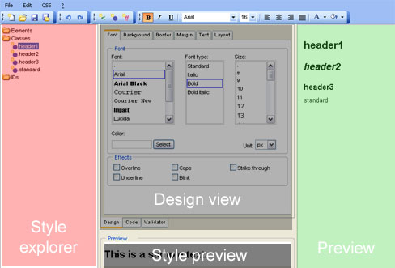
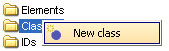
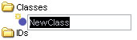
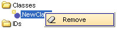

pinStyle

1 pinStyle Features
1.1 Style explorer
Style Explorer lists all styles of current css file. They are sort by css type.
Select a style to edit with clicking on it. Style explorer automatically refreshes as code is edited.
Use style explorer to add, rename or remove styles.
1.2 Design view
With design view you can edit styles just by choosing attributes (color, font size, font family).
After setting an attribute the style preview and preview refreshes.
1.3 Code view
With code view you can edit styles directly in source code. This feature is only recommend for professionals.
After edit styles in code view, style explorer, style preview and preview refreshes.
1.4 Validator
By clicking on Validator you can check/validate your css code.
1.5 Preview
Here you can preview all classes and ids of style sheet.
1.6 Style preview
Style preview shows a preview of the actual selected style.
Please consider that attributes like width, height, left and top are not visible.
2 Working with files
2.1 Open a file
2.2 Save a file or save a copy of a file
3. Using pinStyle
3.1 Informations about CSS (Cascading Style Sheet)
With elements you can global directly format HTML-tags (like table, div or img).
With classes you can format all HTML-tags (begins with '.').
With ids you can format single HTML-tags (begins with '#').
3.1 Add new style
|
|
|   |
3.2 Rename style
| |
|
2. Press F2, insert the new text and then press Enter. or 2. Click again on the style, insert the new text |
3.3 Remove style
|  |